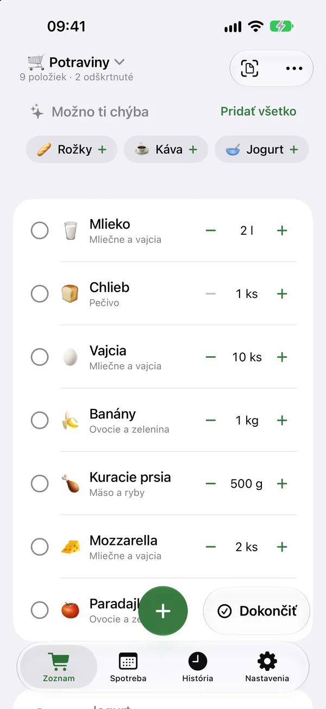
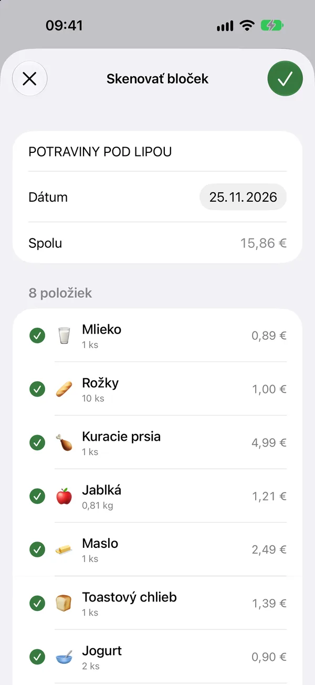

Ako naskenovať bloček v iPhone
-
Krok 1 Ťuknite na Skenovať bloček
V karte Zoznam ťuknite vpravo hore na ikonu Skenovať bloček (vedľa ⋯).

-
Krok 2 Odfoťte bloček
Vyberte Odfotiť alebo Vybrať z galérie. Bloček vyrovnajte a odfoťte celý.

-
Krok 3 Skontrolujte a uložte
Shoppie ukáže obchod, dátum, sumu a položky s cenami. Skontrolujte názvy a ťuknite na zelenú fajku ✓ (Uložiť). Nákup sa uloží do Histórie a potraviny do Spotreby. Prepínačom Odstrániť kúpené položky zo zoznamu si zoznam rovno vyčistíte.

Časté otázky
Funguje sken bez internetu?
Áno. Bloček sa číta priamo v iPhone a nič sa neodosiela. Na iPhonoch s Apple Intelligence pomáha s názvami produktov aj model Apple v zariadení.
Prečo sú niektoré názvy skratky?
Bločky používajú skratky. Na iPhonoch bez Apple Intelligence môžu niektoré ostať tak, ako sú na bločku – pred uložením ich preto skontrolujte.
Ďalšie otázky nájdete na stránke Podpora.